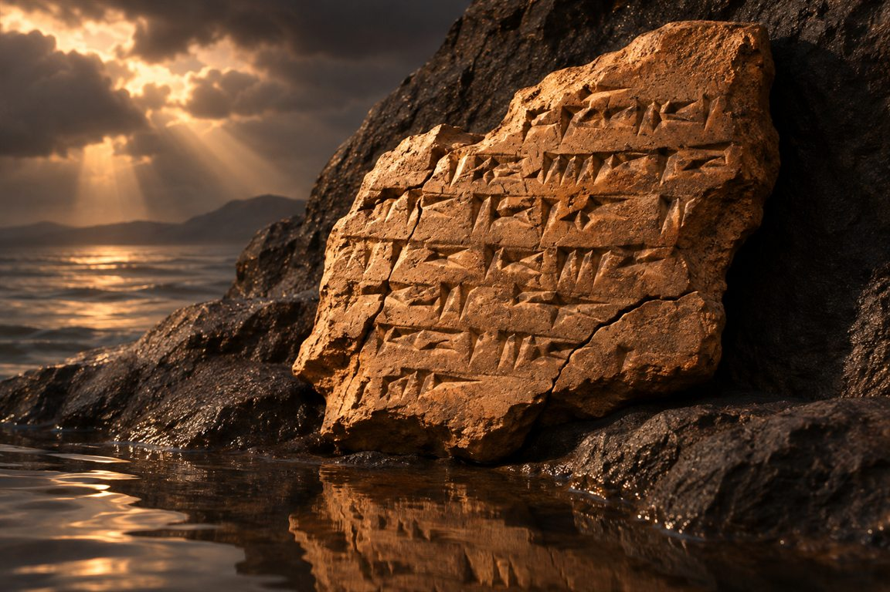

Mesopotamian Flood Texts and the Noah Lineage
Compare the narrative elements shared by Mesopotamian flood texts and the story of Noah, then follow the textual evidence and the limits of proposed links between them.

On this page
Why this matters
This is one of the most important evidence lanes in Ancient Civilizations because it is not based only on visual similarity or speculative engineering. It is anchored in actual ancient Near Eastern literature.
The core issue:
> The biblical Noah flood story appears in a broader and older Mesopotamian flood tradition involving Ziusudra, Atrahasis and Utnapishtim.
That claim is relatively strong as comparative textual history. The more speculative claim is that the tradition preserves a memory of a real late-Pleistocene global or regional catastrophe.
Text cluster
| Text / tradition | Approximate layer | Relevant figure | Why it matters |
|---|---:|---|---|
| Eridu Genesis / Sumerian Flood Story | Sumerian literary tradition, fragmentary | Ziusudra | Humanity, cities, kingship and flood in one early mythic frame |
| Atrahasis | Akkadian epic, 18th century BCE versions | Atrahasis | Creation of humans, population problem, divine decision to send flood, warning to survivor |
| Epic of Gilgamesh Tablet XI | Standard Babylonian epic using older material | Utnapishtim | Gilgamesh seeks the immortal flood survivor; flood story parallels Noah narrative |
| Sumerian King List | Royal ideology / king-list tradition | Ziusudra of Shuruppak in some recensions | Kingship before and after the flood; huge reign lengths; city sequence |
| Genesis flood narrative | Hebrew Bible | Noah | Later canonical form; shares major structural elements with Mesopotamian flood stories |
Shared narrative elements
Common elements across the broader tradition include:
- gods or divine council decide humanity must be destroyed,
- one righteous or favored human receives warning,
- survivor builds a vessel,
- family/animals/seed of life are preserved,
- flood destroys the old world,
- vessel comes to rest after the waters recede,
- birds may be sent out to test land conditions,
- sacrifice/offering follows survival,
- survivor receives special status or covenant/immortality.
LaCroix's use of the material
In the Jesse Michels interview, LaCroix emphasizes that the flood hero appears under different names and literary layers:
- Ziusudra in Sumerian context,
- Atrahasis in Akkadian context,
- Utnapishtim in Gilgamesh,
- Noah in later biblical tradition.
Transcript anchors:
1:37:34— Gilgamesh, Eridu Genesis, Adapa and related tablets are named as core sources.1:37:52— LaCroix argues the Noah/Deluge story was adopted from older Sumerian stories.1:46:43— chapter focus: Noah, Gilgamesh and the Flood.1:47:21— Ziusudra is identified as an earlier flood-hero figure.1:54:36— LaCroix returns to the original flood story and Utnapishtim/Ziusudra.
Strong reading
A strong, defensible reading is:
1. Mesopotamian flood traditions predate or strongly parallel the biblical Noah narrative.
2. These traditions circulated, evolved and were adapted across Sumerian, Akkadian, Babylonian, Assyrian and Hebrew contexts.
3. Flood narrative, kingship legitimacy and divine-human boundary themes are intertwined.
4. The texts preserve real ancient intellectual history even if their supernatural frame is mythic.
Speculative reading
A speculative X Files reading is:
1. The flood hero may encode the survival of a priestly or knowledge-bearing lineage.
2. The “antediluvian kings” with extremely long reigns may encode time cycles, dynastic myth, astronomical numbers or sacred chronology.
3. The flood may preserve memory of a catastrophe older than the currently attested textual layers.
4. Later religious systems may have inherited a compressed version of a much older survival narrative.
This remains speculative unless tied to stronger archaeological/geological evidence.
Critical reading
What the textual evidence supports:
- Mesopotamian flood traditions are older than the biblical canonical form.
- Similarities are too strong to ignore as purely coincidental.
- Flood stories are central to ancient Near Eastern theology, kingship and mortality themes.
What it does not prove by itself:
- a global flood,
- a lost high-technology civilization,
- a specific Younger Dryas event,
- literal immortality,
- direct continuity from 12,000 BCE to Sumer without intermediate evidence.
Research tasks
- Add exact editions/translations: Andrew George for Gilgamesh, Lambert/Millard for Atrahasis, Oxford/ETCSL where appropriate.
- Build a comparison table line by line: warning, boat, animals, birds, sacrifice, mountain/resting place, reward.
- Add source passages with quotations where public-domain or licensed extracts are available.
- Compare with local Mesopotamian flood geology versus broader late-Pleistocene catastrophe models.